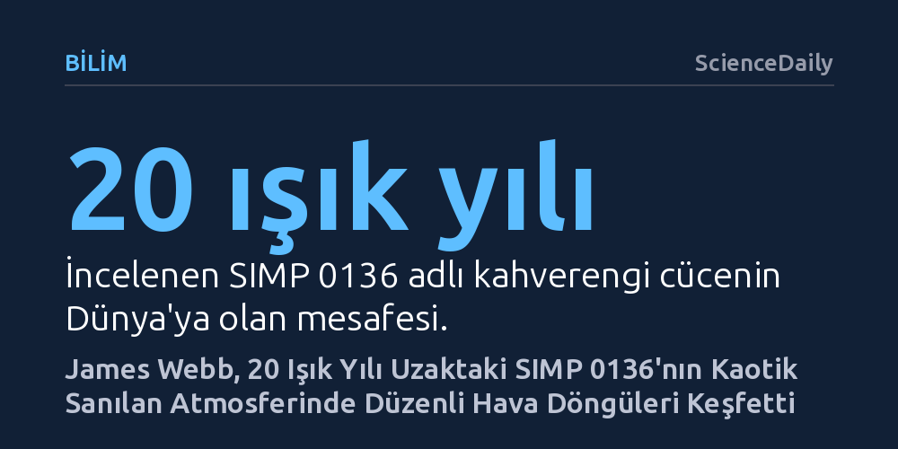

BILIM · ScienceDaily · 2026-10-18
James Webb Teleskobu verilerini inceleyen gökbilimciler, 20 ışık yılı uzaktaki bir kahverengi cücenin kaotik atmosferinin yalnızca sıcaklık dalgalanmaları ve bulut katmanlarıyla yönetilen üç düzenli hava durumuna sahip olduğunu belirledi. Bu matematiksel yöntem, Güneş Sistemi dışındaki gezegenlerin iklimlerini çözmeyi hızlandıracak.
Uzak dünyaların kaotik sanılan fırtınalı iklimlerinin, tek bir ışık pikselinden bile çözülebilen son derece yalın ve düzenli kurallarla işlediğini gösteriyor.

Dünya'dan 20 ışık yılı uzaklıkta bulunan SIMP 0136, gökbilimcilerin uzun süredir dikkatini çeken sıra dışı bir gökcismi. Bir gaz devi gezegenden çok daha büyük ve sıcak olan bu cisim, bir yıldız gibi parlamasını sağlayacak nükleer tepkimeleri başlatacak kütleye sahip değil. Kahverengi cüce olarak adlandırılan bu tür arakatman cisimler, kendi içlerinde devasa boyutlarda atmosferik çalkantılara ev sahipliği yapıyor. SIMP 0136'nın yüzeyinde de Dünya'daki hiçbir hava olayına benzemeyen, Jüpiter'in meşhur fırtınalarını andıran gezegen ölçeğinde bulut sistemleri hüküm sürüyor.
Dublin Trinity College araştırmacıları, James Webb Uzay Teleskobu'ndan elde edilen verileri incelediklerinde ilk bakışta tamamen kaotik görünen bu atmosferin altında şaşırtıcı bir düzen olduğunu ortaya çıkardı. Daha önce kutup ışıklarına benzer parlamalar sergilediği bilinen bu vahşi atmosferin, rastgele savrulan bir karmaşadan ziyade birbirini düzenli aralıklarla takip eden üç belirgin hava durumundan oluştuğu tespit edildi.
Teleskop kayıtlarında sadece tek bir ışık pikseli olarak görünen böylesine uzak bir cismin havasını anlamak ilk bakışta olanaksız görünebilir. Trinity ekibi, cisim kendi ekseni etrafında dönerken Webb'in son derece hassas spektrometrelerine ulaşan ışığın dalga boylarındaki ufak parlaklık değişimlerini inceledi. Bu devasa veri yığınını anlamlandırmak için de istatistikte sıkça kullanılan Temel Bileşenler Analizi (PCA) adlı matematiksel yönteme başvurdular.
Araştırmacılar atmosfere dair önceden katı teorik varsayımlar yüklemek yerine, verinin kendi içindeki en güçlü kalıpları ortaya çıkarmasına izin verdiler. Bu yaklaşım, gerçek atmosfer hareketlerini rasgele ölçüm gürültülerinden kusursuz biçimde ayırdı. Sonuçlar, ilk bakışta son derece karmaşık duran tüm atmosfer hareketliliğinin neredeyse tamamının yalnızca iki temel etkenle açıklanabildiğini gösterdi: sıcaklık dalgalanmaları ve bulutların dikey katmanlaşma yapısı.
Cismin dönüşüyle birlikte sırayla görüş alanına giren üç hava durumu, bir tür atmosferik yama haritası oluşturuyor. Kimi bölgeler daha sıcak ve ince bulut tabakalarıyla kaplıyken, diğer bölgeler daha soğuk ve atmosferin derinliklerine uzanan kalın bulut kütlelerinden meydana geliyor. Üstelik bu döngüsel örüntülerin düzinelerce dönüş boyunca kararlılığını koruduğu ve atmosferin temel dinamiklerinin zaman içinde değişmediği belirlendi.
Bu buluş, yalnızca SIMP 0136'nın yerel hava durumunu aydınlatmakla kalmıyor; Güneş Sistemi dışındaki gezegenlerin incelenmesinde de yepyeni bir kapı aralıyor. Doğrudan gözlemlenmesi ana yıldızlarının kör edici parlaklığı nedeniyle son derece güç olan dev ötegezegenlerin aksine, kahverengi cüceler uzayda tek başlarına parladıkları için çok daha net incelenebiliyor. Bu durum onları bulut oluşumu, ısı taşınımı ve aşırı atmosfer dolaşımı gibi karmaşık süreçleri test etmek için kusursuz birer doğal laboratuvar haline getiriyor.
Dublin ekibinin geliştirdiği matematiksel yöntem, gökbilimcilerin analiz süreçlerini kökten değiştirecek bir verimlilik sunuyor. Araştırmacılar doğrudan haftalar süren devasa bilgisayar simülasyonlarına girişmek yerine, PCA tekniğiyle atmosferi yöneten baskın etkenleri dakikalar içinde tespit edebilecek. Böylece teleskop zamanı ve işlem gücü, yalnızca derinlemesine incelenmeyi hak eden kritik fiziksel süreçlere odaklanabilecek.
Uzak dünyaların atmosferlerini çözümlemek, salt bulutların ve rüzgarların yerini saptamaktan çok daha derin bir amaca hizmet ediyor. Bir gökcisminin atmosfer davranışı; onun kimyasal bileşimi, iç sıcaklığı, yerçekimsel dinamikleri ve evrimsel geçmişi hakkında doğrudan ipuçları taşıyor. Bu bilgiler, modern gökbilimin en büyük sorusu olan Güneş Sistemi dışında hangi dünyaların yaşama elverişli olabileceği arayışının temel taşlarını oluşturuyor.
Yirmi ışık yılı uzaktan saniyede 300 bin kilometre hızla yola çıkıp yirmi yılda teleskobun aynasına düşen zayıf bir ışık huzmesi, evrenin ne kadar uzak köşelerine ulaşabildiğimizin bir kanıtı. Tek bir ışık noktasının ardındaki fırtınaları ayrıştırabilen bu yeni matematiksel bakış açısı, gelecekte yaşanabilir dünyaların izlerini ararken gökbilimcilerin en güçlü rehberlerinden biri olacak.